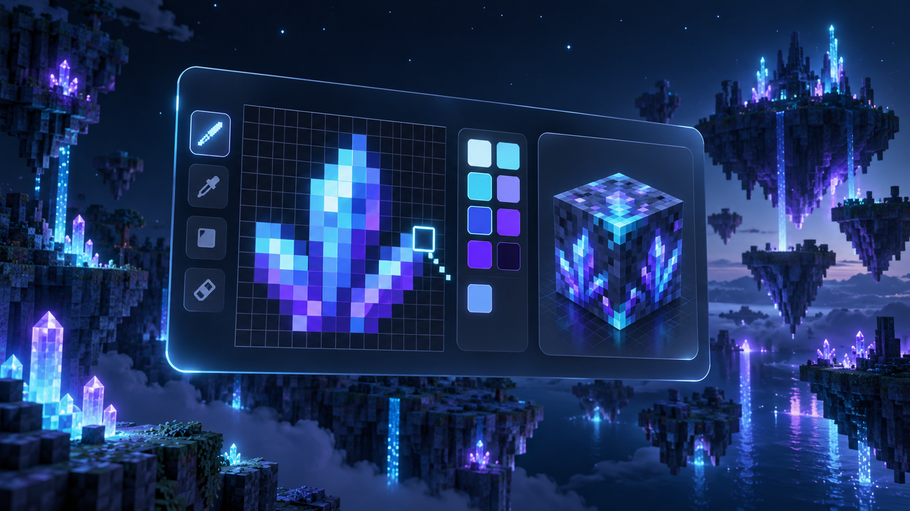
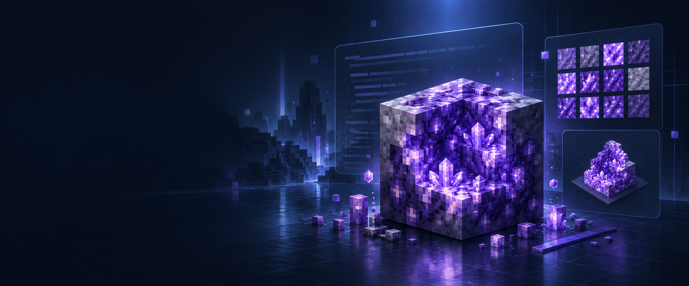
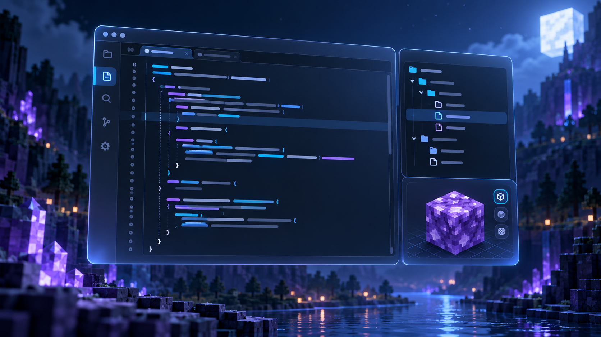

01 / TEXTUR
Pixel für Pixel
Zeichne, fülle, radiere und ändere Farben. Die Voxelvorschau folgt derselben gespeicherten Textur.
Minecraft Java · Mod Creation Studio
Beschreibe, zeichne und bearbeite deinen Mod in einer lokalen Werkstatt. Die Skizze bleibt editierbar, Java-Quelltext entsteht aus deinem Projekt und KI bleibt optional.
Projekte und Zugangsdaten bleiben auf deinem Gerät.

MOD STUDIO · JAVA WORKSPACE01 / Werkbank
Jeder Bereich hängt an demselben lokalen Mod-Projekt: Eigenschaften, Textur, Vorschau und generierter Quelltext bleiben zusammen.

Zeichne, fülle, radiere und ändere Farben. Die Voxelvorschau folgt derselben gespeicherten Textur.

Sieh dir den aus dem Projekt erzeugten Code und die zugehörigen Ressourcen an.
Erzeuge ein Quellprojekt oder baue ein JAR für den aktuell verifizierten Zieladapter.
Die drei Grafiken sind neu für Mod Studio erstellte Konzeptbilder. Sie zeigen keine Screenshots und keine fertigen Mod-Assets.
02 / Transparenter Stand
Die Vorschau trennt vorhandene Funktionen klar von den nächsten Ausbauzielen. Loader- und Versionskompatibilität wird nicht vorgetäuscht.
Der aktuelle Build-Umfang ist eine frühe Alpha und steht im vollständigen Projektstatus.
03 / Windows Alpha
Das Setup enthält die App und ihre Laufzeiten. Einmal installieren, Projekt erstellen und die erste Skizze zeichnen. Für die Anmeldung oder den ersten Minecraft-Build wird Internet benötigt.